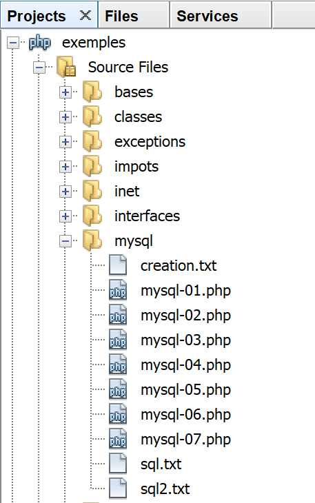
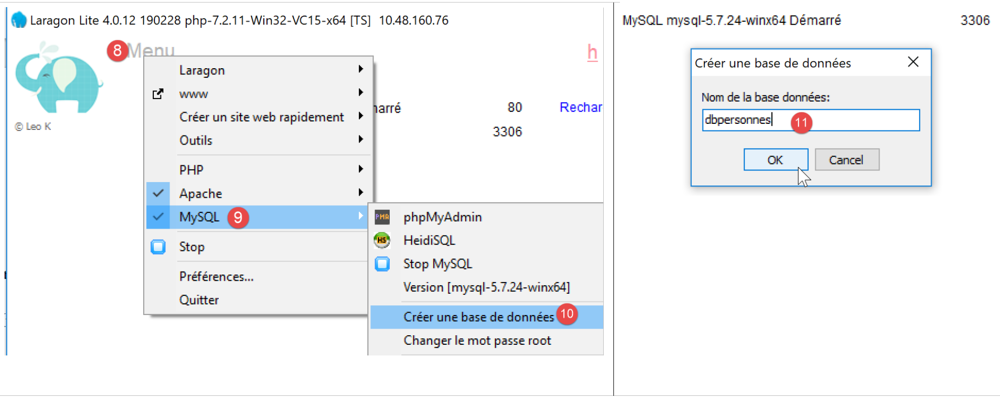
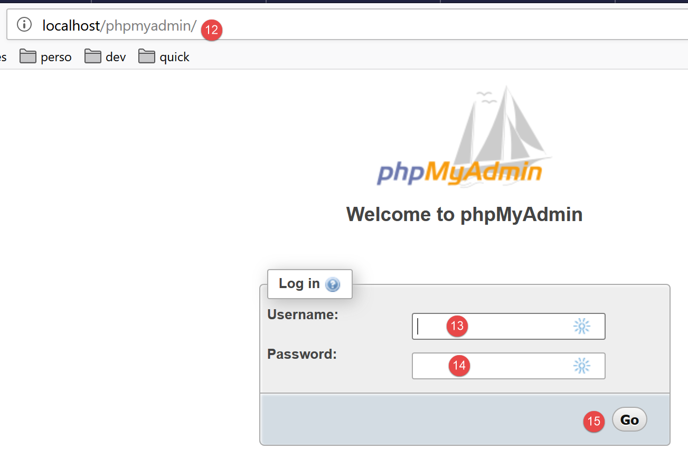
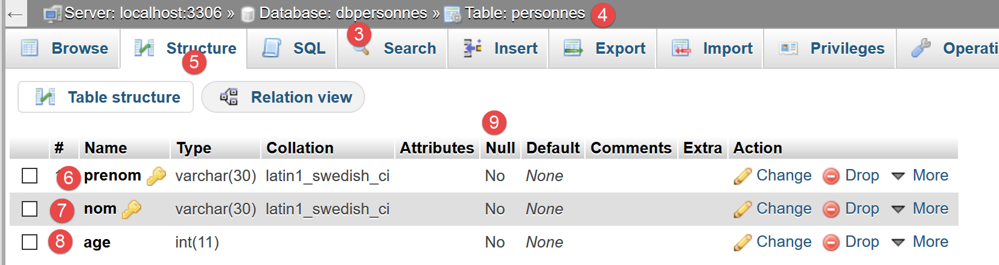

12. Verwendung des MySQL-DBMS

Wir werden nun PHP-Skripte unter Verwendung einer MySQL-Datenbank schreiben:

In der obigen Architektur kommuniziert das PHP-Skript (1) nicht direkt mit dem DBMS (Datenbankmanagementsystem) (3). Es kommuniziert mit einem Vermittler, der als DBMS-Treiber bezeichnet wird. PHP bietet eine Standardschnittstelle für diese Treiber, die PDO-Schnittstelle (PHP Data Objects). Diese Schnittstelle wird durch verschiedene Klassen implementiert, die auf jedes DBMS zugeschnitten sind: eine Klasse für das MySQL-DBMS, eine andere für das PostgreSQL-DBMS… Um das DBMS zu wechseln, wechseln wir den Treiber:

Der PDO-Treiber trennt das PHP-Skript (1) vom DBMS (3, 6). Da diese Treiber eine Standardschnittstelle implementieren, könnte man erwarten, dass das PHP-Skript (1) beim Wechsel vom MySQL-DBMS (3) zum PostgreSQL-DBMS (6) unverändert bleibt. In der Realität gibt es dieses Ideal jedoch nicht. Tatsächlich sendet das PHP-Skript zur Kommunikation mit dem DBMS SQL-Befehle (Structured Query Language). Dies ist eine Sprache, die von allen DBMS implementiert wird, jedoch unvollständig ist. Folglich haben DBMS eigene Befehle hinzugefügt. Dies ist eine Hauptursache für Inkompatibilitäten zwischen DBMS. Darüber hinaus können sich die in Datenbanken verwendbaren Datentypen von einem DBMS zum anderen unterscheiden. Beispielsweise unterstützt PostgreSQL eine viel größere Bandbreite an Datentypen als das DBMS MySQL. Dies ist eine zweite Ursache für Inkompatibilität. Eine weitere Ursache ist der Umgang mit automatischen Primärschlüsseln (die vom DBMS generiert werden): Praktisch jedes DBMS hat seine eigenen Regeln. Und so weiter… Es gibt zahlreiche Ursachen für Inkompatibilität.
Wenn Sie beim Wechsel von MySQL (3) zu PostgreSQL (6) das Umschreiben des PHP-Skripts (1) vermeiden möchten, müssen Sie in der Regel eine neue Ebene zwischen dem PHP-Skript (1) und dem PDO-Treiber (2, 5) einfügen, deren Aufgabe es ist, die Inkompatibilitäten zwischen den beiden DBMS zu beheben. In den einfachen Fällen, mit denen wir es zu tun haben werden, ist diese zusätzliche Ebene jedoch nicht erforderlich.
Wir werden nun das MySQL-DBMS verwenden. Dieses ist im Laragon-Paket enthalten (siehe Abschnitt „Links“).
Falls der Leser mit den Konzepten von Datenbanken und SQL noch nicht vertraut ist, könnte das Dokument [http://sergetahe.com/cours-tutoriels-de-programmation/cours-tutoriel-sql-avec-le-sgbd-firebird/] hilfreich sein. Dieses Dokument verwendet das Firebird-DBMS anstelle von MySQL, behandelt jedoch die Grundlagen von Datenbanken und SQL. Wie MySQL bietet auch Firebird eine frei verfügbare Version mit geringem Speicherbedarf.
12.1. Erstellen einer Datenbank
Wir zeigen Ihnen nun, wie Sie mit dem Laragon-Tool eine Datenbank und einen MySQL-Benutzer erstellen.

- Nach dem Start kann Laragon [1] über ein Menü [2] verwaltet werden;
- Installieren Sie in [3-5] das MySQL-Verwaltungstool [phpMyAdmin], falls es noch nicht installiert ist;

- Starten Sie in [6] den Apache-Webserver und das MySQL-DBMS;
- In [7] wird der Apache-Server gestartet;
- In [8] wird der MySQL-Datenbankserver gestartet;

- Erstellen Sie in [8-10] eine Datenbank mit dem Namen [dbpersonnes] [11]. Wir werden eine Personendatenbank aufbauen;

- in [11] verwalten wir die soeben erstellte Datenbank;

- Der Vorgang [Databases] sendet eine Webanfrage an die URL [http://localhost/phpmyadmin]. Der Apache-Webserver von Laragon antwortet darauf. Die URL [http://localhost/phpmyadmin] ist die URL für das Dienstprogramm [phpMyAdmin], das wir zuvor installiert haben [5]. Mit diesem Dienstprogramm können Sie MySQL-Datenbanken verwalten;
- Standardmäßig lauten die Anmeldedaten des Datenbankadministrators: root [13] ohne Passwort [14];

- in [16] die Datenbank, die wir zuvor erstellt haben;

- Derzeit haben wir eine Datenbank [dbpersonnes] [17], die leer ist [18];
Wir erstellen einen Benutzer [admpersonnes] mit dem Passwort [nobody], der über alle Rechte für die Datenbank [dbpersonnes] verfügt:

- In [19] befinden wir uns in der Datenbank [dbpersonnes];
- In [20] wählen wir die Registerkarte [Privileges] aus;
- In [21-22] sehen wir, dass der Benutzer [root] über alle Rechte an der Datenbank [dbpersonnes] verfügt;
- in [23] erstellen wir einen neuen Benutzer;

- in [25-26] erhält der Benutzer den Benutzernamen [admdbpersonnes];
- in [27-29] lautet sein Passwort [nobody];
- In [30] meldet phpMyAdmin, dass das Passwort sehr schwach (leicht zu knacken) ist. In einer Produktionsumgebung ist es am besten, mit [31] ein starkes Passwort zu generieren;
- In [32] wird festgelegt, dass der Benutzer [admdbpersonnes] volle Berechtigungen für die Datenbank [dbpersonnes] haben muss;
- In [33] werden die angegebenen Informationen überprüft;

- In [35] zeigt phpMyAdmin an, dass der Benutzer erstellt wurde;
- In [36] die SQL-Abfrage, die auf der Datenbank ausgeführt wurde;
- In [37] verfügt der Benutzer [admpersonnes] über volle Berechtigungen für die Datenbank [dbpersonnes];
Nun haben wir:
- eine MySQL-Datenbank [dbpersonnes];
- einen Benutzer [admpersonnes/nobody], der vollen Zugriff auf diese Datenbank hat;
Wir werden PHP-Skripte schreiben, um mit der Datenbank zu interagieren. PHP verfügt über verschiedene Bibliotheken zur Verwaltung von Datenbanken. Wir werden die PDO-Bibliothek (PHP Data Objects) verwenden, die als Vermittler zwischen dem PHP-Code und dem DBMS fungiert:

Die PDO-Bibliothek ermöglicht es dem PHP-Skript, sich von der genauen Beschaffenheit des verwendeten DBMS zu abstrahieren. So kann, wie oben gezeigt, das MySQL-DBMS durch das PostgreSQL-DBMS ersetzt werden, ohne dass dies nennenswerte Auswirkungen auf den PHP-Skriptcode hat. Diese Bibliothek ist standardmäßig nicht verfügbar. Sie können ihre Verfügbarkeit wie folgt überprüfen:

- Überprüfen Sie unter [1-4] die aktiven PDO-Erweiterungen;
- in [5] sehen Sie, dass die PDO-Erweiterung für das MySQL-DBMS aktiv ist. Die anderen sind es nicht. Klicken Sie einfach darauf, um sie zu aktivieren;
Eine weitere Möglichkeit, eine Erweiterung zu aktivieren, besteht darin, die Datei [php.ini] (siehe Link), die PHP konfiguriert, direkt zu bearbeiten:

- In [1] ist die MySQL-PDO-Erweiterung aktiviert;
- In [2] ist die Firebird-PDO-Erweiterung deaktiviert;
Nachdem Sie die Datei [php.ini] geändert haben, müssen Sie Laragons PHP neu starten, damit die Änderungen wirksam werden.
12.2. Verbindung zu einer MySQL-Datenbank
Die Verbindung zu einem DBMS wird durch die Erstellung eines PDO-Objekts hergestellt. Der Konstruktor akzeptiert verschiedene Parameter:
Die Parameter haben folgende Bedeutung:
$dsn | (Datenquellenname) ist eine Zeichenfolge, die den Typ des DBMS und dessen Standort im Internet angibt. Die Zeichenfolge „mysql:host=localhost“ gibt an, dass es sich um ein MySQL-DBMS handelt, das auf dem lokalen Server läuft. Diese Zeichenfolge kann weitere Parameter enthalten, wie beispielsweise den Listening-Port des DBMS und den Namen der Datenbank, mit der eine Verbindung hergestellt werden soll: „mysql:host=localhost:port=3306:dbname=dbpersonnes“; |
$user | Benutzername des sich anmeldenden Benutzers; |
$passwd | sein Passwort; |
$driver_options | ein Array mit Optionen für den DBMS-Treiber; |
Nur der erste Parameter ist erforderlich. Das auf diese Weise erstellte Objekt dient dann als Grundlage für alle Operationen, die an der Datenbank durchgeführt werden, mit der Sie verbunden sind. Wenn das PDO-Objekt nicht erstellt werden konnte, wird eine PDOException ausgelöst.
Hier ist ein Beispiel für eine Verbindung [mysql-01.php]:
<?php
// connection to a local MySql database
// user identity is (admpersonnes,nobody)
const ID = "admpersonnes";
const PWD = "nobody";
const HOTE = "localhost";
try {
// connection
$dbh = new PDO("mysql:host=".HOTE, ID, PWD);
print "Connexion réussie\n";
// closing the connection
$dbh = NULL;
} catch (PDOException $e) {
print "Erreur : " . $e->getMessage() . "\n";
exit();
}
Ergebnisse:
Kommentare
- Zeile 11: Die Verbindung zu einem DBMS wird durch die Erstellung eines PDO-Objekts hergestellt. Der Konstruktor wird hier mit den folgenden Parametern verwendet:
- eine Zeichenfolge, die den Typ des DBMS und dessen Standort im Internet angibt. Die Zeichenfolge „mysql:host=localhost“ gibt an, dass es sich um ein MySQL-DBMS handelt, das auf dem lokalen Server läuft. Der Port wurde nicht angegeben. In diesem Fall wird standardmäßig Port 3306 verwendet. Der Name der Datenbank wurde ebenfalls nicht angegeben. Es wird also eine Verbindung zum MySQL-DBMS hergestellt, wobei die Auswahl einer bestimmten Datenbank später erfolgt;
- eine Benutzer-ID;
- dessen Passwort;
- Zeile 14: Die Verbindung wird geschlossen, indem das ursprünglich erstellte PDO-Objekt zerstört wird;
- Zeile 15: Die Verbindung zu einem DBMS kann fehlschlagen. In diesem Fall wird eine PDOException ausgelöst. Diese Ausnahme leitet sich von der PHP-Klasse [RuntimeException] ab;
- Zeile 16: Die Fehlermeldung der Ausnahme wird angezeigt;
Führen wir das Skript erneut aus, indem wir in Zeile 6 ein falsches Passwort eingeben. Das Ergebnis lautet wie folgt:
Erreur : SQLSTATE[HY000] [1045] Access denied for user 'admpersonnes'@'localhost' (using password: YES)
12.3. Erstellen einer Tabelle
Das Skript [mysql-02.php] zeigt, wie man eine Tabelle in einer Datenbank erstellt:
<?php
// database identity
const DSN = "mysql:host=localhost;dbname=dbpersonnes";
// user login
const ID = "admpersonnes";
const PWD = "nobody";
try {
// connection to the MySql database
$connexion = new PDO(DSN, ID, PWD);
// delete the people table if it exists
$sql = "drop table personnes";
$connexion->exec($sql);
// create people table
$sql = "create table personnes (prenom varchar(30) NOT NULL, nom varchar(30) NOT NULL, age integer NOT NULL, primary key(nom,prenom))";
$connexion->exec($sql);
} catch (PDOException $ex) {
// error display
print "Erreur : " . $ex->getMessage() . "\n";
} finally {
// disconnect if necessary
$connexion = NULL;
}
// end
print "Terminé\n";
exit;
Kommentare
- Zeile 11: Verbindung zur Datenbank herstellen. Dies ist immer der erste Schritt. Das Ergebnis der Verbindung ist ein [PDO]-Objekt, über das Datenbankoperationen ausgeführt werden;
- Zeile 13: Die SQL-Anweisung [drop table people] löscht die Tabelle [people] aus der Datenbank [people_db]. Wenn die Tabelle [people] nicht existiert, führt dies nicht zu einem Fehler;
- Zeile 14: Ausführung der vorherigen SQL-Anweisung in der Datenbank [dbpersonnes]. Diese Ausführung kann eine [PDOException] auslösen, die in Zeile 18 abgefangen wird;
- Zeile 16: Diese SQL-Anweisung erstellt eine Tabelle mit dem Namen [people]. Eine Tabelle besteht aus Zeilen und Spalten. Die Spalten bilden die sogenannte Tabellenstruktur. Die Zeilen bilden den Inhalt der Tabelle. Eine Datenbank kann eine oder mehrere Tabellen enthalten. Die Tabelle [people] wird drei Spalten haben:
- first_name: der Vorname einer Person als Zeichenkette mit bis zu 30 Zeichen;
- last_name: der Nachname derselben Person als Zeichenfolge mit bis zu 30 Zeichen;
- age: das Alter der Person als Ganzzahl;
- Das Attribut NOT NULL für eine Spalte schreibt vor, dass die Spalte einen Wert enthalten muss. Wird kein Wert angegeben, führt dies zu einer [PDOException];
- [primary key(last_name,first_name)] legt einen Primärschlüssel für die Tabelle [people] fest. Ein Primärschlüssel hat für jede Zeile in der Tabelle einen eindeutigen Wert. Hier wird der Primärschlüssel durch Verknüpfung der Spalten [last_name] und [first_name] der Zeile gebildet. Diese Einschränkung stellt sicher, dass die Tabelle nicht zwei Personen mit demselben Nach- und Vornamen enthalten kann – d. h. zwei Personen mit demselben Namen. Das Anlegen eines doppelten Eintrags für eine Person in der Tabelle löst eine [PDOException] aus;
- Zeile 17: Ausführung der SQL-Abfrage in der Datenbank [dbpersonnes];
- Zeile 20: Wenn eine [PDOException] auftritt, wird die zugehörige Fehlermeldung angezeigt;
- Zeilen 21–24: Wir fügen in jedem Fall, unabhängig davon, ob eine Ausnahme auftritt oder nicht, die [finally]-Klausel ein, um die Datenbankverbindung zu schließen (Zeile 23);
Ergebnisse:
Wenn das Skript fehlerfrei ausgeführt wird, ist die Tabelle in phpMyAdmin zu sehen:


- in [3] die Datenbank;
- in [4] wird die Tabelle angezeigt;
- in [5] wird die Tabellenstruktur auf der Registerkarte [Struktur] angezeigt;
- in [6–8] die drei Spalten der Tabelle;
- in [9] darf keine der drei Spalten leer sein;

- in [10] die Liste der Tabellenindizes. Ein Index ermöglicht es Ihnen, Zeilen in der Tabelle mit einem bestimmten Index schneller zu finden, als wenn Sie die Zeilen der Tabelle nacheinander durchgehen würden. Der Primärschlüssel ist immer Teil der Indizes, aber ein Index muss kein Primärschlüssel sein;
- in [11] ist der Index hier der Primärschlüssel;
- in [12] besteht der Index aus den Spalten [last_name, first_name] jeder Zeile;
Sehen wir uns nun an, was passiert, wenn wir Fehler im Datenbanknamen, im Benutzernamen bzw. im Passwort einfügen:
Wenn wir einen nicht existierenden Datenbanknamen eingeben:
Erreur : SQLSTATE[HY000] [1044] Access denied for user 'admpersonnes'@'%' to database 'dbpersonnes2'
Wenn wir einen nicht existierenden Benutzernamen eingeben:
Erreur : SQLSTATE[HY000] [1045] Access denied for user 'admpersonnes2'@'localhost' (using password: YES)
Wenn ein falsches Passwort eingegeben wird:
Erreur : SQLSTATE[HY000] [1045] Access denied for user 'admpersonnes'@'localhost' (using password: YES)
12.4. Eine Tabelle füllen
Wir werden ein PHP-Skript schreiben, das die SQL-Befehle ausführt, die in der folgenden Textdatei [creation.txt] enthalten sind:
Kommentare
- Bei SQL-Befehlen (Structured Query Language) wird nicht zwischen Groß- und Kleinschreibung unterschieden;
- Zeile 1: Wir löschen die Tabelle [people], falls sie existiert;
- Zeile 2: Wir teilen dem MySQL-Server mit, dass wir ihm in UTF-8 kodierte Zeichen senden werden. Dieser MySQL-spezifische SQL-Befehl ist hier beispielsweise notwendig, um sicherzustellen, dass das „é“ in Géraldine korrekt in der Datenbank erscheint. Wenn wir Zeile 2 weglassen, wird das „é“ in eine Folge von zwei seltsamen Zeichen umgewandelt. Der Client ist das in NetBeans geschriebene PHP-Skript. Dieses Skript kodiert die Dateien in UTF-8 [1-4], wie unten gezeigt:

- Zeile 3: Erstellung der Tabelle [people] mit drei Spalten (first_name, last_name, age) und dem Primärschlüssel (last_name, first_name);
- Zeilen 4–10: Einfügen von 7 Zeilen in die Tabelle [people];
- Zeile 6: Diese Einfügeanweisung sollte fehlschlagen, da sie denselben Einfügevorgang wie in Zeile 5 versucht. Die Primärschlüsselbeschränkung sollte diese Einfügung verhindern: Zwei Personen können nicht denselben Vor- und Nachnamen haben;
- Zeile 10: Diese INSERT-Anweisung sollte fehlschlagen, da sie denselben Eintrag wie in Zeile 9 versucht;
Das PHP-Skript, das für die Ausführung der SQL-Anweisungen in dieser Textdatei zuständig ist, lautet wie folgt [mysql-03.php]:
<?php
// database identity
const DSN = "mysql:host=localhost;dbname=dbpersonnes";
// user login
const ID = "admpersonnes";
const PWD = "nobody";
// identity of the SQL command text file to be executed
const SQL_COMMANDS_FILENAME = "creation.txt";
// open database connection MySql
try {
$connexion = new PDO(DSN, ID, PWD);
} catch (PDOException $ex) {
// error display
print "Erreur : " . $ex->getMessage() . "\n";
exit;
}
// we want every SGBD error to trigger an exception
$connexion->setAttribute(PDO::ATTR_ERRMODE, PDO::ERRMODE_EXCEPTION);
// order file execution SQL
$erreurs = exécuterCommandes($connexion, SQL_COMMANDS_FILENAME, TRUE, FALSE);
// locking connection
$connexion = NULL;
//display number of errors
printf("\n-----------------------\nIl y a eu %d erreur(s)\n", count($erreurs));
for ($i = 0; $i < count($erreurs); $i++) {
print "$erreurs[$i]\n";
}
// it's over
print "Terminé\n";
exit;
// ---------------------------------------------------------------------------------
function exécuterCommandes(PDO $connexion, string $SQLFileName, bool $suivi = FALSE, bool $arrêt = TRUE): array {
// uses the $connexion connection
// executes the SQL commands contained in the SQLFileName text file
// this is a file of SQL commands to be executed one per line
// if $suivi=1 then each execution of a SQL order is displayed as a success or failure
// if $arrêt=1, the function stops on the 1st error encountered, otherwise it executes all sql commands
// the function returns an array (nb of errors, error1, error2...)
// check for the presence of the SQLFileName file
if (!file_exists($SQLFileName)) {
return ["Le fichier [$SQLFileName] n'existe pas"];
}
// execution of SQL queries contained in SQLFileName
// we put them in a table
$requêtes = file($SQLFileName);
// mistake?
if ($requêtes === FALSE) {
return ["Erreur lors de l'exploitation du fichier SQL [$SQLFileName]"];
}
// execute requests one by one - initially no errors
$erreurs = [];
$i = 0;
$fini = FALSE;
while ($i < count($requêtes) && !$fini) {
// retrieve the query text
// trim will remove the end-of-line marker
$requête = trim($requêtes[$i]);
// empty query?
if (strlen($requête) == 0) {
// ignore the request and move on to the next request
$i++;
continue;
}
try {
// query execution - an exception may be thrown
$connexion->exec($requête);
// screen tracking or not?
if ($suivi) {
print "$requête : Exécution réussie\n";
}
} catch (PDOException $ex) {
// an error has occurred
addError($erreurs, $requête, $ex->getMessage(), $suivi);
// shall we stop?
$fini = $arrêt;
}
// following request
$i++;
}
// result
return $erreurs;
}
function addError(array &$erreurs, string $requête, string $msg, bool $suivi): void {
// add an error msg
$msg = "$requête : Erreur (" . $msg . ")";
$erreurs[] = $msg;
// screen tracking or not?
if ($suivi) {
print "$msg\n";
}
}
Kommentare
- Die Funktion [executeCommands] (Zeilen 36–89) ist für die Ausführung der SQL-Befehle zuständig, die in der Textdatei [$SQLFileName] (Parameter 2) enthalten sind. Zur Ausführung nutzt sie die geöffnete Verbindung [$connection] (Parameter 1) zum MySQL-Server. Der dritte Parameter [$log] ist ein boolescher Wert, der die Bildschirmausgabe steuert: Ist er TRUE, wird die ausgeführte SQL-Anweisung zusammen mit dem Erfolg oder Misserfolg des Befehls auf dem Bildschirm angezeigt; andernfalls erfolgt die Ausführung der SQL-Anweisung im Hintergrund. Der vierte Parameter [$stop] steuert, was zu tun ist, wenn ein SQL-Befehl fehlschlägt: Ist er TRUE, bedeutet dies, dass die Ausführung der SQL-Befehle gestoppt werden muss; andernfalls wird sie fortgesetzt. Die Funktion [executeCommands] gibt ein Array mit Fehlermeldungen zurück, das leer ist, wenn keine Fehler aufgetreten sind;
- Zeilen 11–18: Wir öffnen die Verbindung zur MySQL-Datenbank [dbpersonnes]. Wenn das Öffnen der Verbindung fehlschlägt, wird eine Fehlermeldung angezeigt und der Prozess wird abgebrochen (Zeilen 14–18);
- Zeile 22: Anschließend übergeben wir eine offene Verbindung an die Funktion [executeCommands]. Sie wird geschlossen, sobald die Funktion zurückkehrt (Zeile 24);
- Zeile 20: Bevor die Verbindung an die Funktion [executeCommands] übergeben wird, wird sie konfiguriert. Im Falle eines Fehlers können SQL-Operationen mit einem [PDO]-Objekt entweder den booleschen Wert FALSE (Standardwert) zurückgeben oder eine Ausnahme auslösen. In Zeile 20 wird die letztere Option gewählt. Tatsächlich kann man leicht „vergessen“, das boolesche Ergebnis der Ausführung eines SQL-Befehls zu überprüfen. Dies führt schließlich an anderer Stelle im Code zu einem Fehler, wodurch es schwieriger wird, die ursprüngliche Ursache zurückzuverfolgen. Im Falle einer nicht abgefangenen Ausnahme (kein catch-Block) wird die Ausnahme die Code-Kette hinaufgeleitet, bis sie auf einen catch-Block trifft oder den PHP-Interpreter erreicht, der die Ausnahme abfängt. In diesem Fall werden die Art der Ausnahme und ihr Ursprung im Code angezeigt;
- Zeile 22: Die Funktion [executeCommands] wird aufgerufen, um die SQL-Befehlsdatei [$SQLFileName] auszuführen;
- Zeilen 45–47: Wir überprüfen, ob die SQL-Befehlsdatei tatsächlich existiert. Falls nicht, protokollieren wir den Fehler und geben dieses Ergebnis zurück;
- Zeile 51: Die SQL-Befehle werden in ein Array [$queries] gespeichert. Zeilen 53–55: Wenn der Vorgang fehlschlägt, wird ein Fehler-Array zurückgegeben, das eine einzige Meldung enthält;
- Zeile 57: Wir sammeln die Fehler im Array [$errors];
- Zeile 58: Abfragenummer;
- Zeile 59: Die Boolesche Variable [$finished] steuert die Ausführung der SQL-Anweisungen im Array [$queries]. Wenn sie TRUE wird, wird die Ausführung beendet;
- Zeile 60: Wir durchlaufen alle Abfragen;
- Zeile 63: Wir extrahieren den Text des SQL-Befehls #i. Die Funktion [trim] entfernt die Leerzeichen vor und nach dem SQL-Befehlstext. Mit „Leerzeichen“ meinen wir das Leerzeichen \b, den Wagenrücklauf \r, den Zeilenvorschub \n, den Seitenvorschub \f, das Tabulatorzeichen \t… Wichtig ist hier, dass der Zeilenvorschub im SQL-Text entfernt wird;
- Zeilen 65–69: Ist der SQL-Text leer, wird die Abfrage ignoriert und wir fahren mit der nächsten fort;
- Zeile 72: Wir senden den SQL-Befehl an den MySQL-Server. Die Methode [PDO::exec] löst eine Ausnahme aus, wenn die Ausführung fehlschlägt. Beachten Sie, dass dieses Verhalten auf die in Zeile 20 festgelegte Konfiguration zurückzuführen ist;
- Zeile 79: Die Fehlermeldung wird dem Fehlerarray hinzugefügt;
- Zeile 81: Die boolesche Variable [$fini], die die Schleife steuert, wird gesetzt. Ist der Parameter [$arrêt] (Zeile 36) TRUE, muss die Schleife beendet werden;
- Zeilen 74–76: Wenn die SQL-Anweisung erfolgreich ausgeführt wurde, wird sie auf dem Bildschirm angezeigt, sofern der Parameter [$tracking] (Zeile 36) TRUE ist;
- Zeile 87: Sobald alle SQL-Anweisungen ausgeführt wurden, wird das Fehlerarray [$errors] zurückgegeben;
Die Funktion [adError] in den Zeilen 90–97 ermöglicht es, einen Fehler zum Fehlerarray [$errors] hinzuzufügen:
- Zeile 90: Die Funktion nimmt 4 Parameter entgegen:
- Der Parameter [$errors] wird per Referenz übergeben. Der Grund dafür ist, dass wir das als Parameter übergebene Array ändern wollen, nicht eine Kopie davon;
- Der Parameter [$query] ist der SQL-Text der fehlgeschlagenen Anweisung;
- Der Parameter [$msg] ist die Fehlermeldung, die mit der fehlgeschlagenen Abfrage verbunden ist;
- Der boolesche Wert [$log] gibt an, ob die Fehlermeldung auf der Konsole angezeigt werden soll ($log=TRUE) oder nicht ($log=FALSE);
Die Funktion [executeCommands] wird vom Skript in den Zeilen 3–33 aufgerufen:
- Zeilen 11–18: Es wird eine Verbindung zur MySQL-Datenbank [dbpersonnes] hergestellt;
- Zeile 20: Die Verbindung wird konfiguriert;
- Zeile 22: Anschließend wird die SQL-Befehlsdatei ausgeführt;
- Zeile 24: Die Verbindung wird geschlossen;
- Zeilen 26–29: Anzeige der von der Funktion [executeCommands] zurückgegebenen Fehler;
Bildschirmausgabe:
drop table if exists personnes : Exécution réussie
SET NAMES 'utf8' : Exécution réussie
create table personnes (prenom varchar(30) not null, nom varchar(30) not null, age integer not null, primary key (nom,prenom)) : Exécution réussie
insert into personnes (prenom, nom, age) values('Paul','Langevin',48) : Exécution réussie
insert into personnes (prenom, nom, age) values ('Sylvie','Lefur',70) : Exécution réussie
insert into personnes (prenom, nom, age) values ('Sylvie','Lefur',70) : Erreur (SQLSTATE[23000]: Integrity constraint violation: 1062 Duplicate entry 'Lefur-Sylvie' for key 'PRIMARY')
insert into personnes (prenom, nom, age) values ('Pierre','Nicazou',35) : Exécution réussie
insert into personnes (prenom, nom, age) values ('Géraldine','Colou',26) : Exécution réussie
insert into personnes (prenom, nom, age) values ('Paulette','Girond',56) : Exécution réussie
insert into personnes (prenom, nom, age) values ('Paulette','Girond',56) : Erreur (SQLSTATE[23000]: Integrity constraint violation: 1062 Duplicate entry 'Girond-Paulette' for key 'PRIMARY')
-----------------------
Il y a eu 2 erreur(s)
insert into personnes (prenom, nom, age) values ('Sylvie','Lefur',70) : Erreur (SQLSTATE[23000]: Integrity constraint violation: 1062 Duplicate entry 'Lefur-Sylvie' for key 'PRIMARY')
insert into personnes (prenom, nom, age) values ('Paulette','Girond',56) : Erreur (SQLSTATE[23000]: Integrity constraint violation: 1062 Duplicate entry 'Girond-Paulette' for key 'PRIMARY')
Terminé
Die eingefügten Datensätze sind in phpMyAdmin sichtbar:

12.5. Ausführen beliebiger SQL-Anweisungen
Das folgende Skript demonstriert die Ausführung von SQL-Anweisungen aus der folgenden Textdatei [sql.txt]:
Unter diesen SQL-Anweisungen befindet sich die SELECT-Anweisung, die Ergebnisse aus der Datenbank zurückgibt; die INSERT-, UPDATE- und DELETE-Anweisungen, die die Datenbank ändern, ohne Ergebnisse zurückzugeben; und schließlich ungültige Anweisungen wie die letzte (xselect). Das Skript [mysql-04.php] lautet wie folgt:
<?php
// database identity
const DSN = "mysql:host=localhost;dbname=dbpersonnes";
// user login
const ID = "admpersonnes";
const PWD = "nobody";
// identity of the SQL command text file to be executed
const SQL_COMMANDS_FILENAME = "sql.txt";
try {
// connection to the MySql database
$connexion = new PDO(DSN, ID, PWD);
} catch (PDOException $ex) {
// error display
print "Erreur : " . $ex->getMessage() . "\n";
exit;
}
// we want every SGBD error to trigger an exception
$connexion->setAttribute(PDO::ATTR_ERRMODE, PDO::ERRMODE_EXCEPTION);
// order file execution SQL
$erreurs = exécuterCommandes($connexion, SQL_COMMANDS_FILENAME, TRUE, FALSE);
// locking connection
$connexion = NULL;
//display number of errors
printf("\n-----------------------\nIl y a eu %d erreur(s)\n", count($erreurs));
for ($i = 0; $i < count($erreurs); $i++) {
print "$erreurs[$i]\n";
}
// it's over
print "Terminé\n";
exit;
// ---------------------------------------------------------------------------------
function exécuterCommandes(PDO $connexion, string $SQLFileName, bool $suivi = FALSE, bool $arrêt = TRUE): array {
………………………………………………………….
// execute requests one by one - initially no errors
$erreurs = [];
$i = 0;
$fini = FALSE;
while ($i < count($requêtes) && !$fini) {
// retrieve the query text
// trim will remove the end-of-line marker
$requête = trim($requêtes[$i]);
// empty query?
if (strlen($requête) == 0) {
// ignore the request and move on to the next request
$i++;
continue;
}
// query execution
// we retrieve its name
$commande = "";
if (preg_match("/^\s*(\S+)/", $requête, $champs)) {
$commande = strtolower($champs[0]);
}
try {
// is this a SELECT order?
if ($commande === "select") {
$résultat = $connexion->query($requête);
} else {
$résultat = $connexion->exec($requête);
}
// screen tracking or not?
if ($suivi) {
print "[$requête] : Exécution réussie\n";
}
// the result of execution is displayed
afficherInfos($commande, $résultat);
} catch (PDOException $ex) {
// an error has occurred
addError($erreurs, $requête, $ex->getMessage(), $suivi);
// shall we stop?
$fini = $arrêt;
}
// following request
$i++;
}
// result
return $erreurs;
}
function addError(array &$erreurs, string $requête, string $msg, bool $suivi): void {
…
}
// ---------------------------------------------------------------------------------
function afficherInfos(string $commande, $résultat): void {
// displays the $résultat result of an sql query
// was it a select?
switch ($commande) {
case "select" :
// displays field names
$titre = "";
$nbColonnes = $résultat->columnCount();
for ($i = 0; $i < $nbColonnes; $i++) {
$infos = $résultat->getColumnMeta($i);
$titre .= $infos['name'] . ",";
}
// remove the last character ,
$titre = substr($titre, 0, strlen($titre) - 1);
// displays the list of fields
print "$titre\n";
// dividing line
$séparateurs = "";
for ($i = 0; $i < strlen($titre); $i++) {
$séparateurs .= "-";
}
print "$séparateurs\n";
// data
foreach ($résultat as $ligne) {
$data = "";
for ($i = 0; $i < $nbColonnes; $i++) {
$data .= $ligne[$i] . ",";
}
// remove the last character ,
$data = substr($data, 0, strlen($data) - 1);
// we display
print "$data\n";
}
break;
case "update":
case "insert":
case "delete";
print " $résultat lignes(s) a (ont) été modifiée(s)\n";
break;
}
}
Kommentare
- Zeilen 36–83: Die Funktion [executeCommands] wurde leicht modifiziert: Der SQL-Befehl [select] wird nicht auf die gleiche Weise ausgeführt wie andere SQL-Befehle. Dieser Befehl ist der einzige, der eine Tabelle als Ergebnis zurückgibt, d. h. eine Reihe von Zeilen und Spalten aus der Datenbank;
- Zeilen 55–57: Wir extrahieren das erste Wort der SQL-Anweisung mithilfe eines regulären Ausdrucks;
- Zeilen 60–64: Wenn der SQL-Befehl [select] lautet, wird die Methode [PDO::query] verwendet; andernfalls wird die Methode [PDO::exec] verwendet, um den SQL-Befehl auszuführen. In beiden Fällen wird bei einem Fehlschlag der Ausführung eine Ausnahme ausgelöst und in den Zeilen 71–77 abgefangen. Bei erfolgreicher Ausführung wird das Ergebnis in Zeile 70 angezeigt;
- Zeilen 90–130: Die Funktion displayInfo zeigt Informationen zum Ergebnis der Ausführung eines SQL-Befehls an;
- Zeile 94: Wir behandeln den Fall [select]. Das Ergebnis ist ein Objekt vom Typ [PDOStatement];
- Zeile 96: Die Methode [PDOStatement::getColumnCount()] gibt die Anzahl der Spalten in der Ergebnistabelle der SELECT-Anweisung zurück;
- Zeilen 98–99: Die Methode [PDOStatement::getMeta(i)] gibt ein Wörterbuch mit Informationen über Spalte i der SELECT-Ergebnistabelle zurück. In diesem Wörterbuch ist der Wert, der dem Schlüssel „name“ zugeordnet ist, der Spaltenname;
- Zeilen 97–102: Die Namen der Spalten in der Ergebnistabelle der SELECT-Anweisung werden zu einer Zeichenkette verkettet;
- Zeilen 105–110: Es wird eine Trennzeile mit derselben Länge wie die zuvor erstellte Zeichenkette erstellt;
- Zeilen 112–121: Ein PDOStatement-Objekt kann mit einer foreach-Schleife durchlaufen werden. Bei jeder Iteration ist das zurückgegebene Element eine Zeile aus der SELECT-Ergebnistabelle in Form eines Arrays von Werten, die die Werte der verschiedenen Spalten der Zeile darstellen. Alle diese Werte werden mit einer for-Schleife angezeigt (Zeilen 114–116);
- Zeilen 123–127: Das Ergebnis der Ausführung einer INSERT-, UPDATE- oder DELETE-Anweisung ist die Anzahl der durch die Anweisung geänderten Zeilen;
Anzeige der Ergebnisse:
[set names 'utf8'] : Exécution réussie
[select * from personnes] : Exécution réussie
prenom,nom,age
--------------
Géraldine,Colou,26
Paulette,Girond,56
Paul,Langevin,48
Sylvie,Lefur,70
Pierre,Nicazou,35
[select nom,prenom from personnes order by nom asc, prenom desc] : Exécution réussie
nom,prenom
----------
Colou,Géraldine
Girond,Paulette
Langevin,Paul
Lefur,Sylvie
Nicazou,Pierre
[select * from personnes where age between 20 and 40 order by age desc, nom asc, prenom asc] : Exécution réussie
prenom,nom,age
--------------
Pierre,Nicazou,35
Géraldine,Colou,26
[insert into personnes values('Josette','Bruneau',46)] : Exécution réussie
1 lignes(s) a (ont) été modifiée(s)
[update personnes set age=47 where nom='Bruneau'] : Exécution réussie
1 lignes(s) a (ont) été modifiée(s)
[select * from personnes where nom='Bruneau'] : Exécution réussie
prenom,nom,age
--------------
Josette,Bruneau,47
[delete from personnes where nom='Bruneau'] : Exécution réussie
1 lignes(s) a (ont) été modifiée(s)
[select * from personnes where nom='Bruneau'] : Exécution réussie
prenom,nom,age
--------------
[insert into personnes values('Josette','Bruneau',46)] : Exécution réussie
1 lignes(s) a (ont) été modifiée(s)
[xselect * from personnes where nom='Bruneau'] : Erreur (SQLSTATE[42000]: Syntax error or access violation: 1064 You have an error in your SQL syntax; check the manual that corresponds to your MySQL server version for the right syntax to use near 'xselect * from personnes where nom='Bruneau'' at line 1)
-----------------------
Il y a eu 1 erreur(s)
[xselect * from personnes where nom='Bruneau'] : Erreur (SQLSTATE[42000]: Syntax error or access violation: 1064 You have an error in your SQL syntax; check the manual that corresponds to your MySQL server version for the right syntax to use near 'xselect * from personnes where nom='Bruneau'' at line 1)
Terminé
12.6. Verwendung von vorbereiteten SQL-Anweisungen
12.6.1. Beispiel 1
Betrachten wir das folgende Skript [mysql-05.php]:
<?php
// database identity
const DSN = "mysql:host=localhost;dbname=dbpersonnes";
// user login
const ID = "admpersonnes";
const PWD = "nobody";
try {
// connection to the MySql database
$connexion = new PDO(DSN, ID, PWD);
// we want every SGBD error to trigger an exception
$connexion->setAttribute(PDO::ATTR_ERRMODE, PDO::ERRMODE_EXCEPTION);
// clear the table of people
$connexion->exec("delete from personnes");
// a list of people
$personnes = [];
$personnes[] = ["nom" => "Langevin", "prenom" => "Paul", "age" => 47];
$personnes[] = ["nom" => "Lefur", "prenom" => "Sylvie", "age" => 28];
// we'll put these people in the database
$statement = $connexion->prepare("insert into personnes (nom, prenom, age) values (:nom, :prenom, :age)");
for ($i = 0; $i < count($personnes); $i++) {
$statement->execute($personnes[$i]);
}
} catch (PDOException $ex) {
// error display
print "Erreur : " . $ex->getMessage() . "\n";
} finally {
// locking connection
$connexion = NULL;
}
// it's over
print "Terminé\n";
exit;
Kommentare
Hier konzentrieren wir uns auf die Zeilen 16–24, die zwei Personen in die Tabelle „people“ der Datenbank [dbpersonnes] einfügen.
- Zeile 21: Wir „bereiten“ eine parametrisierte SQL-Anweisung vor. Den Parametern ist das Zeichen : vorangestellt: :last_name, :first_name, :age. Um eine SQL-Anweisung „vorzubereiten“, verwenden wir die Methode [PDO::prepare]. Das Ergebnis ist ein Typ [PDOStatement]. „Vorbereitung“ ist keine Ausführung: Es wird nichts ausgeführt;
- Zeile 23: Ausführung der „vorbereiteten“ Anweisung mit der Methode [PDOStatement::execute]. Dazu müssen Sie den Parametern :last_name, :first_name und :age Werte zuweisen. Dafür gibt es mehrere Möglichkeiten. Hier verwenden wir ein Dictionary, dessen Schlüssel die Parameter der vorbereiteten Anweisung sind, die wir an die Methode [PDOStatement::execute] übergeben. Eine andere Möglichkeit besteht darin, den Parametern mithilfe der Methode [PDOStatement::bindValue($parameter,$value)] einen Wert zuzuweisen. Zum Beispiel:
$statement→bindValue(“nom”,”Langevin”);
$statement→bindValue(“prenom”,”Paul”);
$statement→bindValue(“age”,47);
$statement→execute();
Der Nachteil ist, dass Sie diese Anweisung für jeden Parameter wiederholen müssen. Die Dictionary-Methode ist daher möglicherweise praktischer. Die Methode [PDOStatement::execute] gibt FALSE zurück, wenn die Ausführung fehlschlägt;
- die hier verwendete Methode zum Ausführen der Einfügungen:
- eine vorbereitete Anweisung;
- n Ausführungen der vorbereiteten Anweisung;
ist hinsichtlich der Ausführungszeit effizienter als die Ausführung von n verschiedenen SQL-Anweisungen. Diese Methode ist daher vorzuziehen. Sie kann für SELECT-, UPDATE-, DELETE- und INSERT-SQL-Anweisungen verwendet werden. Im Falle einer SELECT-SQL-Anweisung werden nach der Ausführung mit [PDOStatement::execute] die Ergebniszeilen mit der Methode [PDOStatement::fetchAll] abgerufen;
12.6.2. Beispiel 2
Das folgende Skript [mysql-06.php] veranschaulicht die Verwendung einer vorbereiteten Anweisung für eine SELECT-SQL-Operation sowie verschiedene Möglichkeiten, die von dieser Operation zurückgegebenen Zeilen abzurufen:
<?php
// database identity
const DSN = "mysql:host=localhost;dbname=dbpersonnes";
// user login
const ID = "admpersonnes";
const PWD = "nobody";
try {
// connection to the MySql database
$connexion = new PDO(DSN, ID, PWD);
// we want every SGBD error to trigger an exception
$connexion->setAttribute(PDO::ATTR_ERRMODE, PDO::ERRMODE_EXCEPTION);
// clear the table of people
$connexion->exec("delete from personnes");
// we'll put these people in the database
$statement = $connexion->prepare("insert into personnes (nom, prenom, age) values (:nom, :prenom, :age)");
for ($i = 0; $i < 10; $i++) {
$statement->execute(["nom" => "nom" . $i, "prenom" => "prenom" . $i, "age" => $i * 10]);
}
// query the database
$statement = $connexion->prepare("select nom, prenom, age from personnes");
$statement->execute();
// 1st line
$ligne = $statement->fetch();
var_dump($ligne);
// 2nd line
$ligne = $statement->fetch(PDO::FETCH_ASSOC);
var_dump($ligne);
// 3rd line
$ligne = $statement->fetch(PDO::FETCH_OBJ);
var_dump($ligne);
// 4th line
$statement->setFetchMode(PDO::FETCH_CLASS, "Person");
$ligne = $statement->fetch();
var_dump($ligne);
// sequential reading of all lines
$statement = $connexion->prepare("select nom, prenom, age from personnes");
$statement->execute();
$statement->setFetchMode(PDO::FETCH_CLASS, "Person");
while ($personne = $statement->fetch()) {
print "$personne\n";
}
} catch (PDOException $ex) {
// error display
print "Erreur : " . $ex->getMessage() . "\n";
} finally {
// locking connection
$connexion = NULL;
}
// it's over
print "Terminé\n";
exit;
class Person {
private $nom;
private $prenom;
private $age;
public function __toString() {
return "Personne[$this->nom,$this->prenom,$this->age]";
}
}
Kommentare
- Zeilen 17–20: Wir fügen 10 Zeilen in die Tabelle [people] der Datenbank [admpersonnes] ein:

- Zeile 22: Wir „bereiten“ eine SQL-[select]-Anweisung vor, die wir in Zeile 23 ausführen;
- Zeile 25: Wir rufen mit der Methode [PDOStatement::fetch] eine Zeile aus dem Ergebnis der ausgeführten SQL-[select]-Anweisung ab. Die Methode [PDOStatement::fetch] kann die Ergebniszeilen einer vorbereiteten SQL-[select]-Anweisung auf verschiedene Arten abrufen. Das Skript zeigt einige davon. Die Methode [PDOStatement::fetch] ohne Parameter gibt die aktuelle Zeile des [select] als ein Dictionary zurück, das sowohl nach Spaltennummern als auch nach Spaltennamen indiziert ist;
- Zeile 26: zeigt das folgende Ergebnis an:
array(6) {
["nom"]=>
string(4) "nom0"
[0]=>
string(4) "nom0"
["prenom"]=>
string(7) "prenom0"
[1]=>
string(7) "prenom0"
["age"]=>
string(1) "0"
[2]=>
string(1) "0"
}
- Zeilen 28–29: Der Parameter [PDO::FETCH_ASSOC] stellt sicher, dass die zurückgegebene Zeile ein Wörterbuch ist, das nach den Spaltennamen der Tabelle indiziert ist:
- Zeilen 31–32: Der Parameter [PDO::FETCH_OBJ] stellt sicher, dass die zurückgegebene Zeile ein Objekt vom Typ [stdclass] ist, dessen Attribute die Namen der Spalten der Tabelle sind:
- Zeile 34: Wir legen den Abrufmodus der [fetch]-Methode mithilfe der [PDOStatement::setFetchMode]-Methode fest. Dieser Modus wird dann zum Standardmodus, bis er entweder durch einen weiteren [PDOStatement::setFetchMode]-Aufruf oder durch die Übergabe eines Modus als Parameter an die [PDOStatement::fetch]-Methode geändert wird, wie zuvor geschehen. Der Befehl [setFetchMode(PDO::FETCH_CLASS, "Person")] gibt an, dass die gelesene Zeile in ein Objekt vom Typ [Person] abgelegt werden muss. Diese Klasse muss unter ihren Eigenschaften Attribute aufweisen, die den Namen der Spalten in der gelesenen Zeile entsprechen. Dies ist bei der in den Zeilen 56–63 definierten Klasse [Person] der Fall;
- Zeile 36 zeigt das folgende Ergebnis an:
- Zeilen 38–43: zeigen, wie die Ergebnisse von [select] nacheinander verarbeitet werden;
- Zeile 42: Die Anzeige von [$person] verwendet die Methode [__toString] der Klasse [Person];
12.7. Verwendung von Transaktionen
Eine Transaktion ermöglicht es Ihnen, eine Abfolge von SQL-Anweisungen zu einer einzigen Ausführungseinheit zusammenzufassen: Entweder werden alle Anweisungen erfolgreich ausgeführt, oder eine davon schlägt fehl; in diesem Fall werden alle ihr vorausgehenden SQL-Anweisungen zurückgesetzt. Mit anderen Worten: Wenn Sie eine Transaktion zur Ausführung von SQL-Anweisungen verwenden, befindet sich die Datenbank nach Abschluss der Transaktion in einem stabilen Zustand:
- entweder in einem neuen Zustand, der durch die erfolgreiche Ausführung aller SQL-Anweisungen in der Transaktion entstanden ist;
- oder in dem Zustand, in dem sie sich vor Beginn der Transaktion befand;
Wir greifen das im vorherigen Abschnitt besprochene Beispiel der Ausführung der in einer Textdatei enthaltenen SQL-Anweisungen wieder auf. Wir werden diese Ausführung in eine Transaktion einbinden. Die SQL-Anweisungen sind in der folgenden Datei [sql2.txt] enthalten:
set names 'utf8'
select * from personnes
select nom,prenom from personnes order by nom asc, prenom desc
select * from personnes where age between 20 and 40 order by age desc, nom asc, prenom asc
insert into personnes values('Josette','Bruneau',46)
update personnes set age=47 where nom='Bruneau'
select * from personnes where nom='Bruneau'
delete from personnes where nom='Bruneau'
select * from personnes where nom='Bruneau'
insert into personnes values('Josette','Bruneau',46)
select * from personnes where nom='Bruneau'
xselect * from personnes where nom='Bruneau'
Die falsche Reihenfolge in Zeile 12 führt dazu, dass die gesamte Transaktion fehlschlägt. Die Datenbank sollte daher in den Zustand vor der Transaktion zurückversetzt werden. Im obigen Beispiel sollte die durch Zeile 10 eingefügte Zeile nicht in der Tabelle erscheinen. Das Skript hat sich kaum verändert. Hier ist jedoch noch einmal der vollständige Code [mysql-07.php]:
<?php
// database identity
const DSN = "mysql:host=localhost;dbname=dbpersonnes";
// user login
const ID = "admpersonnes";
const PWD = "nobody";
// identity of the SQL command text file to be executed
const SQL_COMMANDS_FILENAME = "sql2.txt";
try {
// connection to the MySql database
$connexion = new PDO(DSN, ID, PWD);
} catch (PDOException $ex) {
// error display
print "Erreur : " . $ex->getMessage() . "\n";
exit;
}
// we want every SGBD error to trigger an exception
$connexion->setAttribute(PDO::ATTR_ERRMODE, PDO::ERRMODE_EXCEPTION);
// order file execution SQL
$erreurs = exécuterCommandes($connexion, SQL_COMMANDS_FILENAME, TRUE);
// locking connection
$connexion = NULL;
//display number of errors
printf("\n-----------------------\nIl y a eu %d erreur(s)\n", count($erreurs));
for ($i = 0; $i < count($erreurs); $i++) {
print "$erreurs[$i]\n";
}
// it's over
print "Terminé\n";
exit;
// ---------------------------------------------------------------------------------
function exécuterCommandes(PDO $connexion, string $SQLFileName, bool $suivi = FALSE): array {
// uses the $connexion connection
// executes the SQL commands contained in the SQLFileName text file
// this is a file of SQL commands to be executed one per line
// SQL commands are executed in a transaction
// if one of the orders fails, the transaction is cancelled and the database is restored to its pre-transaction state
// if $suivi=1 then each execution of a SQL order is displayed as a success or failure
// the function returns an array (nb of errors, error1, error2...)
//
// check for the presence of the SQLFileName file
if (!file_exists($SQLFileName)) {
return ["Le fichier [$SQLFileName] n'existe pas"];
}
// execution of SQL queries contained in SQLFileName
// we put them in a table
$requêtes = file($SQLFileName);
// mistake?
if ($requêtes === FALSE) {
return ["Erreur lors de l'exploitation du fichier SQL [$SQLFileName]"];
}
// requests will be placed in a transaction
$connexion->beginTransaction();
// execute requests one by one - initially no errors
$erreurs = [];
$i = 0;
$fini = FALSE;
while ($i < count($requêtes) && !$fini) {
// retrieve the query text
// trim will remove the end-of-line marker
$requête = trim($requêtes[$i]);
// empty query?
if (strlen($requête) == 0) {
// ignore the request and move on to the next request
$i++;
continue;
}
// query execution
// we retrieve its name
$commande = "";
if (preg_match("/^\s*(\S+)/", $requête, $champs)) {
$commande = strtolower($champs[0]);
}
try {
// is this a SELECT order?
if ($commande === "select") {
$résultat = $connexion->query($requête);
} else {
$résultat = $connexion->exec($requête);
}
// screen tracking or not?
if ($suivi) {
print "[$requête] : Exécution réussie\n";
}
// the result of execution is displayed
afficherInfos($commande, $résultat);
} catch (PDOException $ex) {
// an error has occurred
addError($erreurs, $requête, $ex->getMessage(), $suivi);
// we stop at the next turn
$fini = TRUE;
}
// following request
$i++;
}
// end of transaction
if (!$fini) {
// no errors: transaction validated
$connexion->commit();
} else {
// there have been errors: the transaction is cancelled
$connexion->rollBack();
// add error
addError($erreurs, "", "Transaction annulée", $suivi);
}
// result
return $erreurs;
}
function addError(array &$erreurs, string $requête, string $msg, bool $suivi): void {
…
}
// ---------------------------------------------------------------------------------
function afficherInfos(string $commande, $résultat): void {
…
}
Kommentare
Wir haben die Änderungen am ursprünglichen Skript [mysql-04.php] hervorgehoben.
- Zeilen 22, 36: Die Funktion [executeCommands] hat ihren vierten Parameter [$stop=TRUE] verloren. Dies liegt daran, dass SQL-Befehle innerhalb einer Transaktion ausgeführt werden und jeder Fehler dazu führt, dass die Transaktion zurückgesetzt wird;
- Zeilen 40–41: Aufruf der Transaktionsfunktion;
- Zeile 57: Eine Transaktion wird gestartet. Ab diesem Zeitpunkt wird jeder SQL-Befehl, der innerhalb der Schleife in den Zeilen 62–99 ausgeführt wird, innerhalb dieser Transaktion ausgeführt;
- Zeilen 101–109: Die boolesche Variable [$fini] ist TRUE, wenn ein Fehler aufgetreten ist (Zeile 95). Ist er FALSE, sind keine Fehler aufgetreten, und die Transaktion wird festgeschrieben (Zeile 103). Ist er TRUE, sind Fehler aufgetreten, sodass die Transaktion zurückgesetzt wird (Zeile 106) und der Transaktionsfehler zur Fehlerliste hinzugefügt wird (Zeile 108);
Ergebnisse
Vor der Ausführung des Skripts befindet sich die Datenbank [admpersonnes] im folgenden Zustand:

Wir führen das Skript [mysql-07.php] aus. Die Bildschirmausgabe sieht wie folgt aus:
[set names 'utf8'] : Exécution réussie
[select * from personnes] : Exécution réussie
prenom,nom,age
--------------
prenom0,nom0,0
prenom1,nom1,10
prenom2,nom2,20
prenom3,nom3,30
prenom4,nom4,40
prenom5,nom5,50
prenom6,nom6,60
prenom7,nom7,70
prenom8,nom8,80
prenom9,nom9,90
[select nom,prenom from personnes order by nom asc, prenom desc] : Exécution réussie
nom,prenom
----------
nom0,prenom0
nom1,prenom1
nom2,prenom2
nom3,prenom3
nom4,prenom4
nom5,prenom5
nom6,prenom6
nom7,prenom7
nom8,prenom8
nom9,prenom9
[select * from personnes where age between 20 and 40 order by age desc, nom asc, prenom asc] : Exécution réussie
prenom,nom,age
--------------
prenom4,nom4,40
prenom3,nom3,30
prenom2,nom2,20
[insert into personnes values('Josette','Bruneau',46)] : Exécution réussie
1 lignes(s) a (ont) été modifiée(s)
[update personnes set age=47 where nom='Bruneau'] : Exécution réussie
1 lignes(s) a (ont) été modifiée(s)
[select * from personnes where nom='Bruneau'] : Exécution réussie
prenom,nom,age
--------------
Josette,Bruneau,47
[delete from personnes where nom='Bruneau'] : Exécution réussie
1 lignes(s) a (ont) été modifiée(s)
[select * from personnes where nom='Bruneau'] : Exécution réussie
prenom,nom,age
--------------
[insert into personnes values('Josette','Bruneau',46)] : Exécution réussie
1 lignes(s) a (ont) été modifiée(s)
[select * from personnes where nom='Bruneau'] : Exécution réussie
prenom,nom,age
--------------
Josette,Bruneau,46
[xselect * from personnes where nom='Bruneau'] : Erreur (SQLSTATE[42000]: Syntax error or access violation: 1064 You have an error in your SQL syntax; check the manual that corresponds to your MySQL server version for the right syntax to use near 'xselect * from personnes where nom='Bruneau'' at line 1)
[] : Erreur (Transaction annulée)
-----------------------
Il y a eu 2 erreur(s)
[xselect * from personnes where nom='Bruneau'] : Erreur (SQLSTATE[42000]: Syntax error or access violation: 1064 You have an error in your SQL syntax; check the manual that corresponds to your MySQL server version for the right syntax to use near 'xselect * from personnes where nom='Bruneau'' at line 1)
[] : Erreur (Transaction annulée)
Terminé
- Zeile 53: Beim Befehl [xselect] tritt ein Fehler auf;
- Zeile 54: Die Transaktion wird daraufhin zurückgesetzt;
Wenn wir den Datenbankstatus überprüfen, stellen wir fest, dass er sich im gleichen Zustand wie vor der Ausführung des Skripts befindet. Insbesondere sehen wir die Zeile [Josette, Bruneau, 46] aus Zeile 52 der obigen Ergebnisse nicht.
Zusammenfassung
- Eine Transaktion wird mit der Methode [PDO::beginTransaction] gestartet;
- Bei Erfolg wird sie mit der Methode [PDO::commit] bestätigt;
- Bei einem Fehler wird sie mit der Methode [PDO::rollback] abgebrochen;
Bei der Arbeit mit einer Datenbank empfiehlt es sich, alle SQL-Operationen in eine Transaktion einzubinden, um sie von anderen Datenbankbenutzern zu isolieren (dies ist auch deren Zweck). Eine Transaktion sollte so kurz wie möglich sein. Vergessen Sie daher nicht, sie je nach Bedarf mit [commit] oder [rollback] zu beenden.